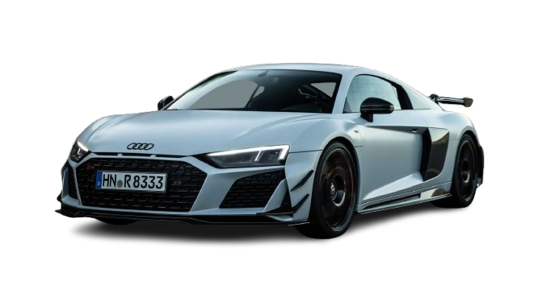
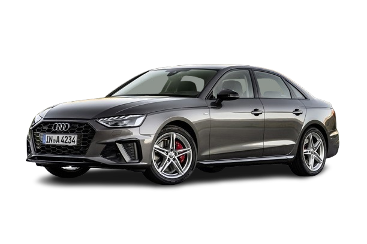
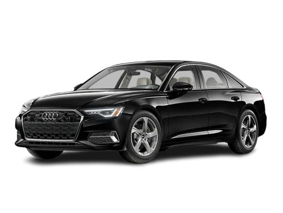
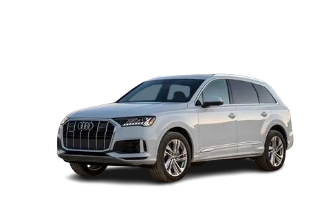

Audi
Historia de la marca
Audi es una marca alemana de automóviles fundada en 1909 por August Horch. Forma parte del Grupo Volkswagen y es conocida por fabricar coches de alta calidad, tecnología avanzada y diseño moderno.
Fundador
El fundador de Audi fue August Horch. Tras abandonar su primera empresa, decidió crear una nueva marca. El nombre "Audi" es la traducción al latín de su apellido "Horch", que significa "escuchar".
Primer coche
El primer modelo fue el Audi Type A, lanzado en 1910. Este coche marcó el inicio de la marca y destacó por su ingeniería avanzada para la época.
Datos importantes
- Fundación: 1909
- País: Alemania
- Empresa matriz: Grupo Volkswagen
- Lema: "A la vanguardia de la técnica"
Modelos famosos
- Audi R8
- Audi A4
- Audi A6
- Audi Q7



